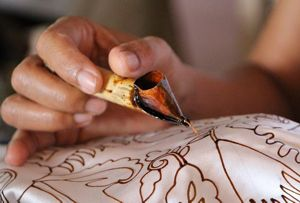
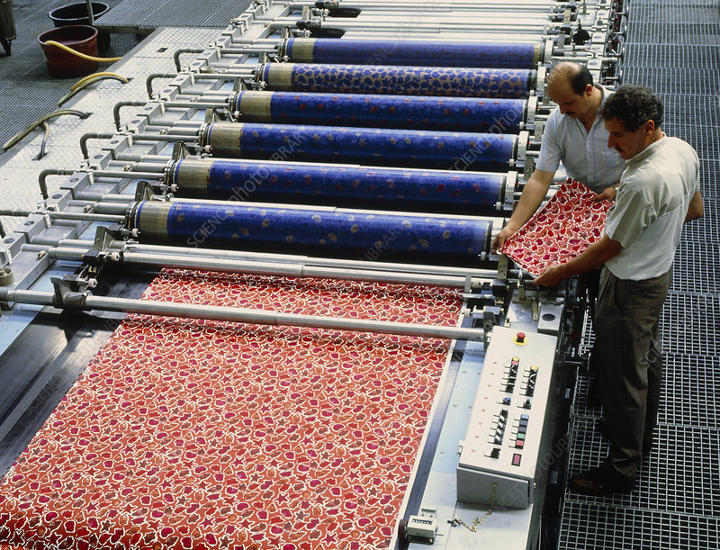

Jenis-Jenis Batik Indonesia

Batik Tulis

Batik Cap

Batik diyakini sudah ada sejak masa kerajaan Majapahit hingga berkembang pada masa Kesultanan Mataram di Jawa. Pada awalnya batik hanya digunakan oleh kalangan bangsawan atau keluarga kerajaan, karena proses pembuatannya memerlukan keterampilan tinggi serta motif motif tertentu hanya boleh dikenakan keluarga tertentu.
Pada abad ke-17 hingga ke-19 batik mulai berkembang di daerah pesisir akibat pengaruh perdagangan. Batik pesisir banyak terpengaruh budaya asing seperti Tiongkok, Belanda, Arab, dan India. Hal ini terlihat dari warna-warna cerah dan motif seperti phoenix, naga, serta ornamen bunga-bunga besar.
Tahun 2009, batik Indonesia resmi diakui sebagai Warisan Budaya Takbenda Dunia oleh UNESCO. Sejak itu, tanggal 2 Oktober diperingati sebagai Hari Batik Nasional.